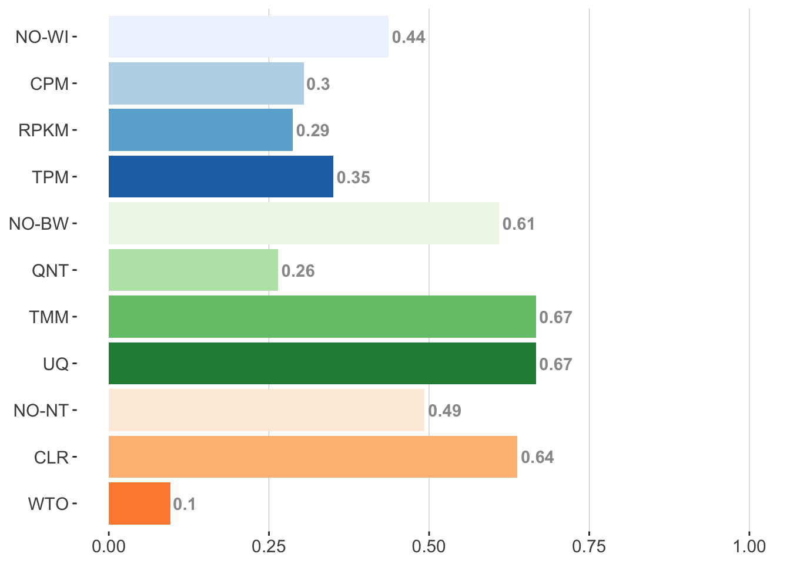

cpm_methods <- c("CPM", "CPM_QNT", "CPM_CLR", "CPM_QNT_CLR", "CPM_WTO", "CPM_QNT_WTO")
rpkm_methods <- c("RPKM", "RPKM_QNT", "RPKM_CLR", "RPKM_QNT_CLR", "RPKM_WTO", "RPKM_QNT_WTO")
tpm_methods <- c("TPM", "TPM_QNT", "TPM_CLR", "TPM_QNT_CLR", "TPM_WTO", "TPM_QNT_WTO")
no_wi_methods <- c("counts", "QNT", "CLR", "QNT_CLR", "WTO", "QNT_WTO")
tmm_methods <- c("TMM", "TMM_CLR", "TMM_WTO")
uq_methods <- c("UQ", "UQ_CLR", "UQ_WTO")
quantile_methods <- c("QNT", "QNT_CLR", "QNT_WTO")
no_bw_methods <- c("counts", "CLR", "WTO")
clr_methods <- c("CLR", "CPM_CLR", "RPKM_CLR", "TPM_CLR",
"QNT_CLR", "TMM_CLR", "UQ_CLR",
"CPM_QNT_CLR", "TPM_QNT_CLR", "RPKM_QNT_CLR")
wto_methods <- c("WTO", "CPM_WTO", "RPKM_WTO", "TPM_WTO",
"QNT_WTO", "TMM_WTO", "UQ_WTO",
"CPM_QNT_WTO", "TPM_QNT_WTO", "RPKM_QNT_WTO")
no_nt_methods <- c("counts", "CPM", "TPM", "RPKM",
"TMM", "UQ", "QNT",
"CPM_QNT", "TPM_QNT", "RPKM_QNT")
single_method_meta <- tibble(group = c("cpm", "rpkm", "tpm", "no_wi",
"tmm", "uq", "qnt", "no_bw",
"clr", "wto","no_nt"),
length = c(6, 6, 6, 6,
3, 3, 3, 3,
10, 10, 10),
type = c("within", "within", "within", "within",
"between", "between", "between", "between",
"transformation", "transformation", "transformation"))#functions to build plots
get_times_greater_than_matrix <- function(meth_df){
#df should be methods_* df (each row is performance on given dataset)
counts_output <- matrix(rep(0, 900), nrow = 30, ncol = 30)
colnames(counts_output) <- colnames(meth_df)
rownames(counts_output) <- colnames(meth_df)
for(num in 1:30){
a <- pull(meth_df, num)
for(val in 1:30){
if (num == val){
counts_output[val, num] <- 0.5
next
}
b <- pull(meth_df, val)
s <- sum(a < b)
s <- s/nrow(meth_df)
counts_output[val, num] <- s
}
}
return(counts_output)
}
get_significance_matrix <- function(df, performance_col_position, method_col_position){
#df tidy format with method as a column and performance as a column
sig_output <- pairwise.wilcox.test(x = pull(df, performance_col_position),
g = pull(df, method_col_position),
paired = TRUE,
p.adjust.method = "BH")$p.value
#add row/col to make 30 by 30
CLR <- sig_output[1,]
CLR[1] <- NA
sig_output <- rbind(CLR, sig_output)
WTO <- sig_output[,29]
WTO[30] <- NA
sig_output <- cbind(sig_output, WTO)
#make symmetric
diag(sig_output) <- 1
sig_output <- Matrix::forceSymmetric(sig_output, uplo = "L")
sig_output <- as.matrix(sig_output)
#replace p vals with sig/not sig
sig_wilcox_gtex_naive <- ifelse(sig_output < 0.01, "*", " ")
}
get_method_part_prop_sig_greater <- function(times_matrix, sig_matrix){
#times_matrix is output of get_times_greater_than_matrix
#sig_matrix is output of get_significance_matrix
#make times_matrix into tibble and get times method_one > method_two
times_greater_than_tibble <- as_tibble(times_matrix)
times_greater_than_tibble$method_one <- colnames(times_matrix)
times_greater_than_tibble <- times_greater_than_tibble %>%
gather(key = method_two, value = times_method_one_is_greater_than_method_two, 1:30)
#make sig_matrix into tibble and get times corrected wilcox p value was
#significant between method_one and method_two
sig_wilcox_tibble <- as_tibble(sig_matrix)
sig_wilcox_tibble$method_one <- colnames(sig_matrix)
sig_wilcox_tibble <- sig_wilcox_tibble %>%
gather(key = method_two, value = significance, 1:30)
sig_wilcox_tibble$significance <- ifelse(sig_wilcox_tibble$significance == "*",
T, F)
#join above two tibbles into one
greater_than_significance_tibble <- left_join(times_greater_than_tibble,
sig_wilcox_tibble,
by = c("method_one", "method_two"))
#make T/F column designating whether method_one > method_two AND significant by
#corrected wilcox p value
greater_than_significance_tibble$method_one_greater_than_and_sig <-
ifelse(greater_than_significance_tibble$times_method_one_is_greater_than_method_two > 0.5 &
greater_than_significance_tibble$significance == T, T, F)
#summarize above info by method
method_summary <- greater_than_significance_tibble %>%
group_by(method_one) %>%
summarise(times_sig_and_greater = sum(method_one_greater_than_and_sig))
#change col name from method_one to method
colnames(method_summary) <- c("method", "times_sig_and_greater")
#turn method_summary into method_parts summary
#here down where function modified from heatmap (all_heatmap_plots.rmd) get_method_times_sig_greater function
#create T/F columns for each method part (does a method have the given method part?)
#wi
method_summary$cpm <- method_summary$method %in% cpm_methods
method_summary$tpm <- method_summary$method %in% tpm_methods
method_summary$rpkm <- method_summary$method %in% rpkm_methods
method_summary$no_wi <- method_summary$method %in% no_wi_methods
#bw
method_summary$tmm <- method_summary$method %in% tmm_methods
method_summary$uq <- method_summary$method %in% uq_methods
method_summary$qnt <- method_summary$method %in% quantile_methods
method_summary$no_bw <- method_summary$method %in% no_bw_methods
#nt
method_summary$wto <- method_summary$method %in% wto_methods
method_summary$clr <- method_summary$method %in% clr_methods
method_summary$no_nt <- method_summary$method %in% no_nt_methods
#gather T/F method columns into method column/one T/F column
#keep only true rows so group col reflects methods actually in group
#don't need membership col anymore (all TRUEs anyway)
#group by group (method part)
#sum times sig and greater for each method in method part group
method_summary <- method_summary %>%
gather(3:13, key = group, value = membership) %>%
filter(membership == T) %>%
select(-membership) %>%
group_by(group) %>%
summarise(times_sig_and_greater = sum(times_sig_and_greater))
#add to single_method_meta so we know how many methods are in each group
method_summary <- left_join(method_summary, single_method_meta, by = "group")
#divide number of times sig and greater by number of chances they had (determined by group length)
method_summary <- method_summary %>%
mutate(divisor = length * 29) %>%
mutate(prop_times_sig_and_greater = times_sig_and_greater/divisor)
#gives better names for plot
method_summary$group <- toupper(method_summary$group)
method_summary$group <- gsub("NO_BW", "NO-BW", method_summary$group)
method_summary$group <- gsub("NO_WI", "NO-WI", method_summary$group)
method_summary$group <- gsub("NO_NT", "NO-NT", method_summary$group)
return(method_summary)
}#GTEX ## log2(auPRC/prior)
#naive plot matrices
l2_auprc_prior_gtex_naive_times_mat <- get_times_greater_than_matrix(methods_gn_auprc_prior)
l2_auprc_prior_gtex_naive_sig_mat <- get_significance_matrix(gnr, method_col_position = 3, performance_col_position = 4)
l2_auprc_prior_gtex_naive_method_part_summary <- get_method_part_prop_sig_greater(times_matrix = l2_auprc_prior_gtex_naive_times_mat,
sig_matrix =l2_auprc_prior_gtex_naive_sig_mat)## `summarise()` ungrouping output (override with `.groups` argument)
## `summarise()` ungrouping output (override with `.groups` argument)#knowledge plot matrices
l2_auprc_prior_gtex_knowledge_times_mat <- get_times_greater_than_matrix(methods_gk_auprc_prior)
l2_auprc_prior_gtex_knowledge_sig_mat <- get_significance_matrix(gkr, method_col_position = 3, performance_col_position = 4)
l2_auprc_prior_gtex_knowledge_method_part_summary <- get_method_part_prop_sig_greater(l2_auprc_prior_gtex_knowledge_times_mat,
l2_auprc_prior_gtex_knowledge_sig_mat)## `summarise()` ungrouping output (override with `.groups` argument)
## `summarise()` ungrouping output (override with `.groups` argument)#naive plot
l2_auprc_prior_gtex_naive_method_part_summary %>%
ggplot(aes(x = group, y = prop_times_sig_and_greater, fill = group)) +
geom_hline(yintercept = 0.25, color = "#999999", size = 0.1) +
geom_hline(yintercept = 0.5, color = "#999999", size = 0.1) +
geom_hline(yintercept = 0.75, color = "#999999", size = 0.1) +
geom_hline(yintercept = 1, color = "#999999", size = 0.1) +
#geom_segment(aes(x = 3.5, xend = 3.5, y = -0.25, yend = 0)) +
#annotate("segment", x=3.5, y=0.25, xend=3.5, yend=0,
# col="red", arrow=arrow(length=unit(0.3, "cm"))) +
geom_col() +
annotation_custom(grob = textGrob(label = "text", hjust = 0, gp = gpar(cex = 1.5)),
ymin = 3.5, ymax = 4, xmin = 3, xmax = 5) +
scale_x_discrete(limits = c("WTO", "CLR", "NO-NT",
"UQ", "TMM", "QNT","NO-BW",
"TPM", "RPKM", "CPM", "NO-WI")) +
scale_fill_manual(values = c("WTO" = "#fd8d3c", "CLR" = "#fdbe85", "NO-NT" = "#feedde",
"QNT" = "#bae4b3", "UQ" = "#238b45", "TMM" = "#74c476", "NO-BW" = "#edf8e9",
"TPM" = "#2171b5", "RPKM" = "#6baed6", "CPM" = "#bdd7e7", "NO-WI" = "#eff3ff")) +
geom_text(aes(label = round(prop_times_sig_and_greater, 2)), hjust = -0.1, color = "#999999", fontface = "bold") +
scale_y_continuous(limits = c(0,1)) +
coord_flip(clip = "off") +
theme(panel.background = element_rect(fill = "white"),
panel.grid.minor = element_blank(),
panel.grid.major = element_blank(),
text = element_text(size = 14),
axis.title = element_blank()) +
guides(fill = F) 
# barplot_labels <- tibble(group = c("Within-Sample\nNormalization", "Between-Sample\nNormalization", "Network\nTransformation"),
# color = c("#2171b5", "#238b45", "#fd8d3c"))
# barplot_labels %>%
# ggplot(aes(x = 0.5, y = factor(group, levels = rev(c("Within-Sample\nNormalization", "Between-Sample\nNormalization", "Network\nTransformation"))),
# fill = color, label = group))+
# geom_tile(color = "white", size = 0.5) +
# scale_fill_manual(values = barplot_labels$color) +
# theme(panel.background = element_blank(),
# panel.grid.major = element_blank(),
# panel.grid.minor = element_blank(),
# axis.text = element_blank(),
# axis.ticks = element_blank(),
# axis.title = element_blank(),
#
# plot.margin = margin(5,0.5,5,0.5)) +
# geom_fit_text() +
# guides(fill = F)